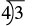
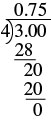
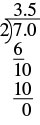
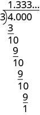
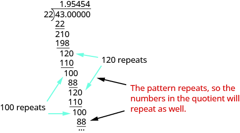
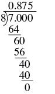

ভগ্নাংশকে দশমিক রূপে লেখো
উৎস-অনুগত উপবিভাগ · m81298-fs-id2692103। সম্পূর্ণ বইয়ের অনুবাদ এখনও চলছে। গাণিতিক চিহ্ন, সংখ্যা ও মূল কাঠামো অক্ষুণ্ণ; প্রযোজ্য ক্ষেত্রে সূত্রের শব্দলেবেল বাংলায় অনূদিত। মূল ছবির ভিতরের ইংরেজি লেবেলের অর্থ বাংলা বিবরণে আছে। স্বাধীন শিক্ষক ও ভাষা-পর্যালোচনা বাকি। অন্য উপবিভাগের উৎস-লিঙ্কে ইন্টারনেট প্রয়োজন।
ভগ্নাংশকে দশমিক রূপে লেখো
দশমিক সংখ্যা পাঠে আমরা দশমিক সংখ্যাকে ভগ্নাংশে রূপান্তর করতে শিখেছি। এবার উল্টো কাজ করব—ভগ্নাংশকে দশমিক রূপে লিখব। মনে রাখো, ভগ্নাংশ-রেখা ভাগ বোঝায়। তাই -কে লেখা যায় অথবা এর অর্থ, ভগ্নাংশকে ভাগের সমস্যা হিসেবে ধরে ভাগ করলেই তাকে দশমিক রূপে লেখা যায়।
অনুশীলন · এই প্রশ্নের লিঙ্ক
ভগ্নাংশ -কে দশমিক রূপে লেখো।
সমাধান
| ভগ্নাংশ-রেখা ভাগ বোঝায়, তাই ভগ্নাংশ -কে ভাগের আকারে লিখতে পারি। |  দীর্ঘ ভাগের বিন্যাসে ভাজ্য 3 ভাগচিহ্নের ভিতরে এবং অশূন্য ভাজক 4 বাঁ দিকে; অর্থাৎ 3 ÷ 4। |
| ভাগ করো। |  3.00-কে 4 দিয়ে দীর্ঘ ভাগ করা হয়েছে। উপরে ভাগফল 0.75। নীচের ধাপগুলিতে 3-এর নীচে 28, তারপর 20-এর নীচে 20 বিয়োগ করে শেষ ভাগশেষ 0 দেখানো হয়েছে; অর্থাৎ 3 ÷ 4 = 0.75। |
| তাই ভগ্নাংশ সমান |
অনুশীলন · এই প্রশ্নের লিঙ্ক
ভগ্নাংশ -কে দশমিক রূপে লেখো।
সমাধান
| এই ভগ্নাংশের মান ঋণাত্মক। ভাগ করার পরে দশমিক মানও ঋণাত্মক হবে। আগে ঋণচিহ্নটি আলাদা রেখে মানের ভাগ করি; পরে উত্তরের আগে ঋণচিহ্ন বসাই। | |
| দীর্ঘ ভাগের বিন্যাসে ভাজ্য এবং অশূন্য ভাজক |  7.0-কে 2 দিয়ে দীর্ঘ ভাগ করা হয়েছে। উপরে ভাগফল 3.5। নীচের ধাপগুলিতে 7 থেকে 6 বিয়োগ, তারপর 10 থেকে 10 বিয়োগ করে শেষ ভাগশেষ 0 দেখানো হয়েছে। ঋণচিহ্নটি পরে পুরো ভাগফলের আগে বসালে −7 ÷ 2 = −3.5। |
| তাই, |
পুনরাবৃত্ত দশমিক
এ পর্যন্ত প্রতিটি উদাহরণে ভগ্নাংশকে দশমিক রূপে লেখার ভাগটি করলে ভাগশেষ 0 হয়েছে। সব সময় এমন হয় না। ভগ্নাংশ -কে দশমিক রূপে লিখলে কী হয় দেখি। প্রথমে লক্ষ করো, একটি অপ্রকৃত ভগ্নাংশ। এটি একের চেয়ে বড়—সংখ্যায় সমতুল দশমিক মানটিও একের চেয়ে বড়—সংখ্যায়
দীর্ঘ ভাগের বিন্যাসে ভাজ্য এবং অশূন্য ভাজক

4.000-কে 3 দিয়ে দীর্ঘ ভাগে উপরে ভাগফল 1.333…। প্রতিটি ধাপে 10 থেকে 9 বিয়োগ করার পরে ভাগশেষ 1 থাকে; আরও শূন্য নামালে একই ধাপ অনন্তকাল চলবে। তাই 4 ÷ 3 = 1.333…।
আমরা যত শূন্যই নামাই না কেন, ভাগশেষ সব সময় থাকবে এবং ভাগফলের 3 অঙ্কটি অনন্তকাল ধরে চলতে থাকবে। সংখ্যাটিকে পুনরাবৃত্ত দশমিক বলা হয়। ‘পুনরাবৃত্ত দশমিক’ নামটি এখানে সম্পাদকীয় বাংলা পরিভাষা; বর্তমান সরকারি বাংলা সাক্ষ্যে এটি প্রত্যক্ষভাবে দেখা যায়নি এবং স্বাধীন পশ্চিমবঙ্গীয় পর্যালোচনা বাকি। মনে রাখো, ‘…’ চিহ্নটি জানায় যে ধরনটি বারবার ফিরে আসছে।
কতগুলি পুনরাবৃত্ত অঙ্ক লিখবে তা বোঝাবে কীভাবে? -এর বদলে যে অঙ্কগুলি পুনরাবৃত্ত হয়, তাদের উপরে একটি রেখা বসিয়ে সংক্ষিপ্ত রূপ লিখি। এই রেখাকে এখানে ‘পুনরাবৃত্তির রেখা’ বলছি; নামটি বর্তমান সরকারি বাংলা সাক্ষ্যে দেখা যায়নি, তাই এটি সম্পাদকীয় ও পর্যালোচনাসাপেক্ষ। পুনরাবৃত্ত দশমিক -কে লেখা হয় ওই সংখ্যায় -এর উপরের রেখাটি জানায় যে অঙ্কটি অনন্তকাল পুনরাবৃত্ত হয়। তাই
অন্য দশমিক সংখ্যায় দুই বা তার বেশি অঙ্কও পুনরাবৃত্ত হতে পারে। সারণি [fs-id2266631]-এ পুনরাবৃত্ত দশমিকের আরও কয়েকটি উদাহরণ আছে।
| হলো পুনরাবৃত্ত অঙ্ক | |
| হলো পুনরাবৃত্ত অঙ্ক | |
| হলো পুনরাবৃত্ত অঙ্কগুচ্ছ | |
| হলো পুনরাবৃত্ত অঙ্কগুচ্ছ |
অনুশীলন · এই প্রশ্নের লিঙ্ক
-কে দশমিক রূপে লেখো।
সমাধান
দীর্ঘ ভাগের বিন্যাসে ভাজ্য এবং অশূন্য ভাজক

43.00000-কে 22 দিয়ে দীর্ঘ ভাগে উপরে ভাগফল 1.95454। নীচে 43 থেকে 22, 210 থেকে 198, 120 থেকে 110 এবং 100 থেকে 88 বিয়োগের ধাপ আছে; তারপর 120 ও 100 পর্যায়ক্রমে আবার আসে। তিরচিহ্ন ও ছবির ইংরেজি লেখার অর্থ হলো এই ধারা পুনরাবৃত্ত হওয়ায় ভাগফলেও 54 অনন্তকাল পুনরাবৃত্ত হয়; প্রথম দশমিক অঙ্ক 9 পুনরাবৃত্ত অংশে নেই। তাই 43 ÷ 22 = 1.95454…।
লক্ষ করো, দীর্ঘ ভাগে ও -এর ধাপগুলি পর্যায়ক্রমে আবার আসে, তাই ভাগফলের অঙ্কগুলিও পুনরাবৃত্ত হয়; অনন্তকাল পুনরাবৃত্ত হবে। ভাগফলের প্রথম দশমিক স্থানের পুনরাবৃত্ত ধরনটির অংশ নয়। তাই,
ভিন্ন রূপে লেখা সংখ্যা যোগ বা বিয়োগ করার সময় ভগ্নাংশ ও দশমিকের মধ্যে রূপান্তর কাজে লাগে। যেমন, একটি ভগ্নাংশের সঙ্গে একটি দশমিক যোগ করতে হলে আগে হয় ভগ্নাংশটিকে দশমিক রূপে, নয়তো দশমিকটিকে ভগ্নাংশে লিখতে হবে।
অনুশীলন · এই প্রশ্নের লিঙ্ক
সরল করো:
সমাধান
| ভগ্নাংশ -কে দশমিক রূপে লেখো। |  7.000-কে 8 দিয়ে দীর্ঘ ভাগে উপরে ভাগফল 0.875। নীচে 7.000 থেকে পর্যায়ক্রমে 64, 60 থেকে 56 এবং 40 থেকে 40 বিয়োগ করে শেষ ভাগশেষ 0; অর্থাৎ 7 ÷ 8 = 0.875। |
|
| যোগ করো। |